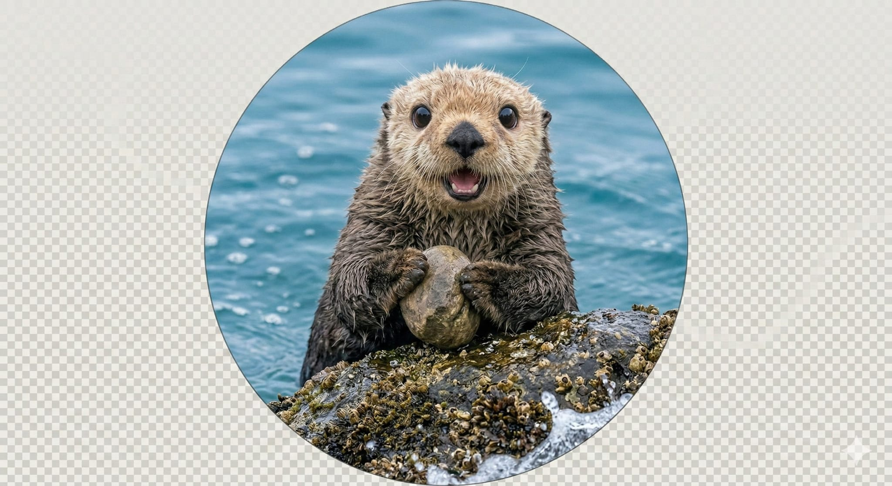
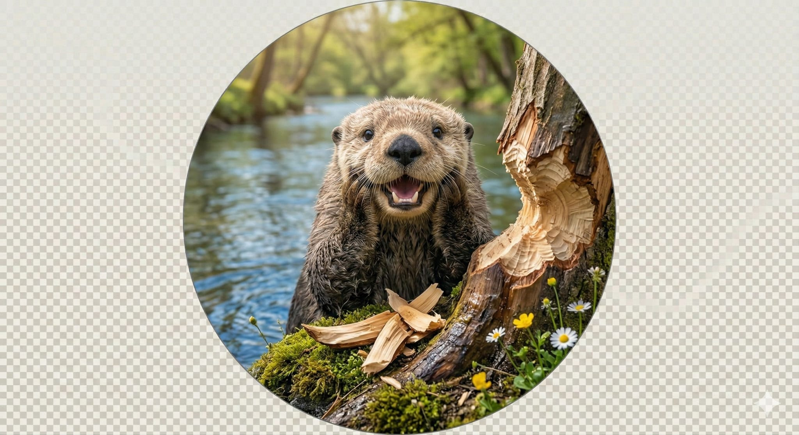
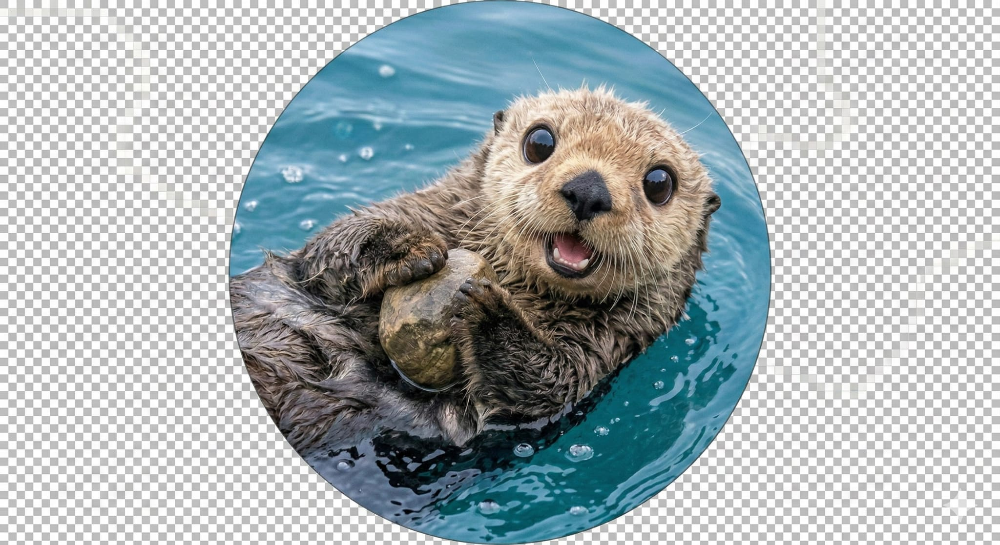
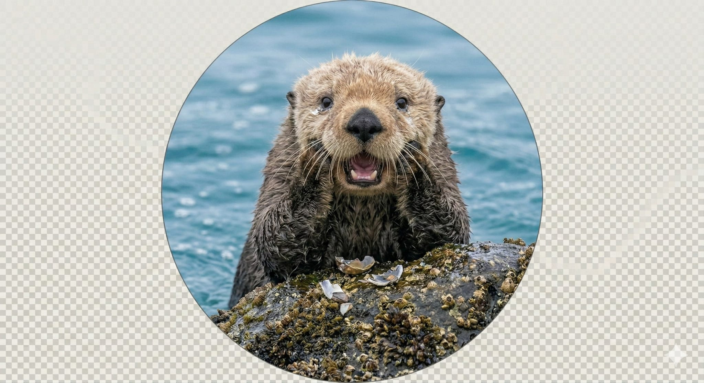

Ein Bund für Fortschritt, Exzellenz und die tiefgreifende Erforschung des aquatischen Lebensraums.
In dieser ehrenwürdigen Halle gedenken wir den Gründungsmitgliedern und herausragenden Persönlichkeiten der Edlen Gesellschaft der Otterschaft, deren unermüdlicher Einsatz und visionäre Einsichten die Fundamente unserer Vereinigung geformt haben. Ihre Errungenschaften sind ein Leuchtturm für alle, die dem Ruf von Omnia ad Pisces folgen.

Isa ist bekannt für ihre bahnbrechenden Studien zur nicht-Newtonschen Fluidmechanik in turbulenten Flussumgebungen. Ihre Forschung über die optimale Kavitationsreduktion bei oberflächlichen Tauchgängen hat das Verständnis aquatischer Fortbewegung revolutioniert. Ihre Ambition ist es, eine universelle Theorie der Wasserresistenz zu formulieren und die Effizienz des Unterwassergravitationsmanövers zu maximieren.
"Der Strom ist die Wahrheit, die Form ist die Anpassung."
🦦
Jan hat sich durch seine innovativen Beiträge zur rekombinanten Sedimentationstechnik und zur strategischen Flussbettgestaltung einen Namen gemacht. Seine komplexen Dammkonstruktionen, die ausschließlich aus organischem Treibgut gefertigt werden, sind Meisterwerke ingenieurtechnischer Präzision. Sein Ziel ist die Entwicklung selbstregulierender Flussdeltas, die maximale Fischwanderung bei minimaler Erosionsrate garantieren.
"Form folgt Funktion, im Fluss und im Stein."
🦦
Tara widmet sich der Erforschung der neuro-sensorischen Adaptationen aquatischer Spezies und deren Implikationen für die interspezifische Kommunikation. Ihre Arbeiten über die olfaktorische Navigation in trüben Gewässern sind wegweisend. Sie strebt danach, ein Kommunikationsprotokoll zu entschlüsseln, das eine symbiotische Koexistenz zwischen terrestrischen und aquatischen Entitäten ermöglicht.
"Hören die Wellen, verstehen das Leben."
🦦
Valentin ist der primäre Theoretiker der Otterschaft, dessen philosophische Abhandlungen über die Existenzialität des Treibgutes und die Ethik der Fischereipraxis als Standardwerke gelten. Seine provokanten Thesen zur transzendentalen Bedeutung des Kieselsteins haben die akademische Welt aufgerüttelt. Seine höchste Ambition ist die Entwicklung einer kohärenten Ontologie des Flusses, die die Interdependenz aller feuchten Phänomene beleuchtet.
"Das Sein im Nass, der Sinn im Fisch."
🦦